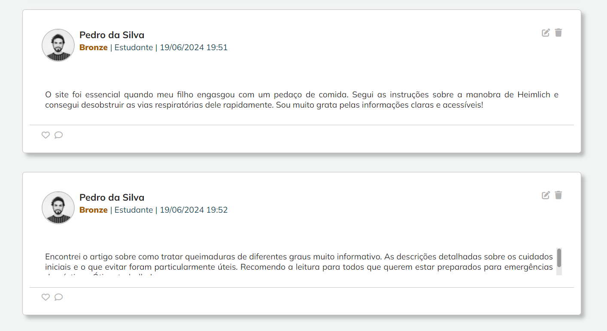
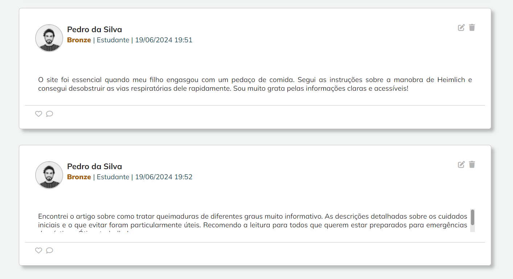

Bombeiros
193


193
190
192
Saiba como lidar com acidentes domésticos, acesse o conteudo através do botão abaixo.
Saiba como lidar com afogamentos, acesse o conteudo através do botão abaixo.
Saiba como lidar com queimaduras, acesse o conteudo através do botão abaixo.
Venha fazer parte da comunidade do primeira ajuda, acesse o conteudo através do botão abaixo.
Venha explorar e se engajar na nossa vibrante comunidade de primeiros socorros. Acesse abaixo o que temos para oferecer na aba comunidade!
 

/i.s3.glbimg.com/v1/AUTH_59edd422c0c84a879bd37670ae4f538a/internal_photos/bs/2022/d/6/ZWcIaBSdq5HFcJtBjwtw/porteiro-de-escola-municipal-salva-vida-de-aluno-que-convulsinou.jpg)
Menino de 9 anos convulsionou na escola em que estuda, em Santos (SP). Dias antes, o profissional da unidade passou por um curso com o Samu.
/i.s3.glbimg.com/v1/AUTH_59edd422c0c84a879bd37670ae4f538a/internal_photos/bs/2019/C/Y/5S7k9ZRAO3exPzOpyG9Q/inarto.jpg)
Flávio Teixeira, de 50 anos, desmaiou enquanto aguardava na fila de uma churrascaria. Profissionais da saúde, que treinavam procedimentos de reanimação do outro lado da rua, atenderam o homem.

Treinamento de primeiros socorros no Clube de Desbravadores capacitou jovem a salvar vida de colega durante recreio escolar.

A iniciativa "Anjinhos da Praia" acontece ao longo desta semana, em Piatã, com crianças de 7 a 13 anos.